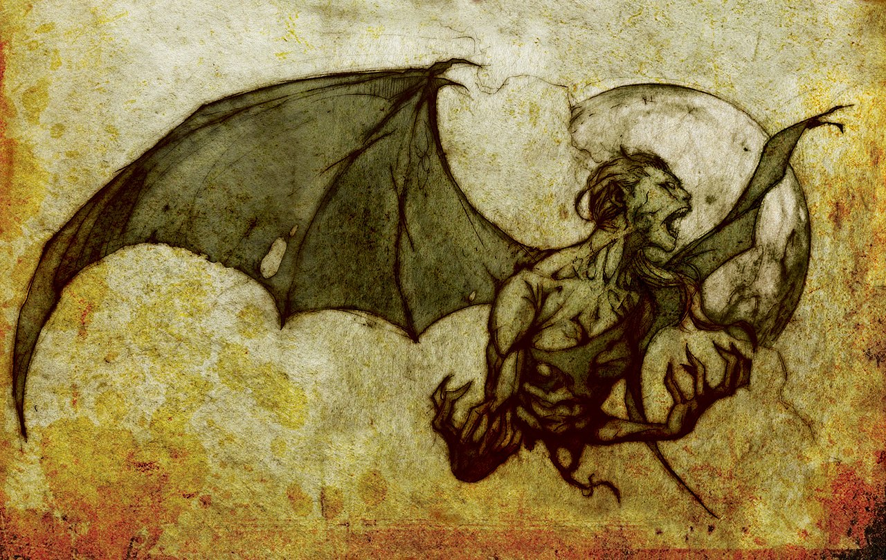

The manananggal (Tagalog: mana'nang'gal) is a mythical creature in the Philippines that is able to separate its upper torso from the lower part of its body. Their fangs and wings give them a vampire-like appearance.

The manananggal is described as scary, often hideous, usually depicted as female, and always capable of severing its upper torso and sprouting huge bat-like wings to fly into the night in search of its victims. The word manananggal comes from the Tagalog word tanggal, which means "to remove" or "to separate", which literally translates as "remover" or "separator". In this case, "one who separates itself". The name also originates from an expression used for a severed torso. The manananggal is said to favor preying on sleeping, pregnant women, using an elongated proboscis-like tongue to suck the hearts of fetuses, or the blood of someone who is sleeping. It also haunts newlyweds or couples in love and sometimes a new born child. Due to being left at the altar, grooms-to-be are one of its main targets.[1] The severed lower torso is left standing, and is the more vulnerable of the two halves. Sprinkling salt, smearing crushed garlic or ash on top of the standing torso is fatal to the creature. The upper torso then would not be able to rejoin itself and would perish by sunrise.[2][3][4] The myth of the manananggal is popular in the Visayan regions of the Philippines, especially in the western provinces of Capiz, Iloilo, Bohol and Antique. There are varying accounts of the features of a manananggal. Like vampires, Visayan folklore creatures, and aswangs, manananggals are also said to abhor garlic, salt and holy water.[5] They were also known to avoid daggers, light, vinegar, spices and the tail of a stingray, which can be fashioned as a whip.[3] Folklore of similar creatures can be found in the neighbouring nations of Indonesia and Malaysia. The province of Capiz is the subject or focus of many manananggal stories, as with the stories of other types of mythical creatures, such as ghosts, goblins, ghouls generically referred to as aswangs. Sightings are purported here, and certain local folk are said to believe in their existence despite modernization. The manananggal shares some features with the vampire of Balkan folklore, such as its dislike of garlic, salt, and vulnerability to sunlight.
"The seventh was called magtatangal, and his purpose was to show himself at night to many persons, without his head or entrails. In such wise the devil walked about and carried, or pretended to carry, his head to different places; and, in the morning, returned it to his body—remaining, as before, alive. This seems to me to be a fable, although the natives affirm that they have seen it, because the devil probably caused them so to believe. This occurred in Catanduanes." Fr. Juan de Plasencia, Customs of the Tagalogs (1589)[6] "Brujo. Magtatangal. Dicen que vuela y come carne humana pero cuando levanta el vuelo no lleva mas que el medio cuerpo y por eso se llma asi porque es de tangal que es desencajar y el tal desencaja la mitad del cuerpo y ese lleva consigo dejadose en casa el otro medio." Magtatangal. A witch. They say that it flies and eats human flesh, but when it flies, it only has half its body, and that is why it is called tangal because it is tangible and can disengage and he dislodges half of his body, and he carries the other means at home.